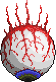

 eye of cuthulu
o olho do cutulho e considerado por muitos jogadores como o verdadeiro primeiro boss do terraira, pelo fato dele ja dropar itens muito bons como o seu escudo e minerio do bioma maligno
ataques:
fase 1: ele tenta chegar em voce dando varios dash devagar e tambem ele joga varios minions que sao pequenos olhos que te seguem e te dao dando
fase 2: o olho se transforma em uma boca e os dash ficam mais rapidos, o segundo ataque sao dash com mais area de alcançe e maior velocidade ele faz varios em seguidas
|